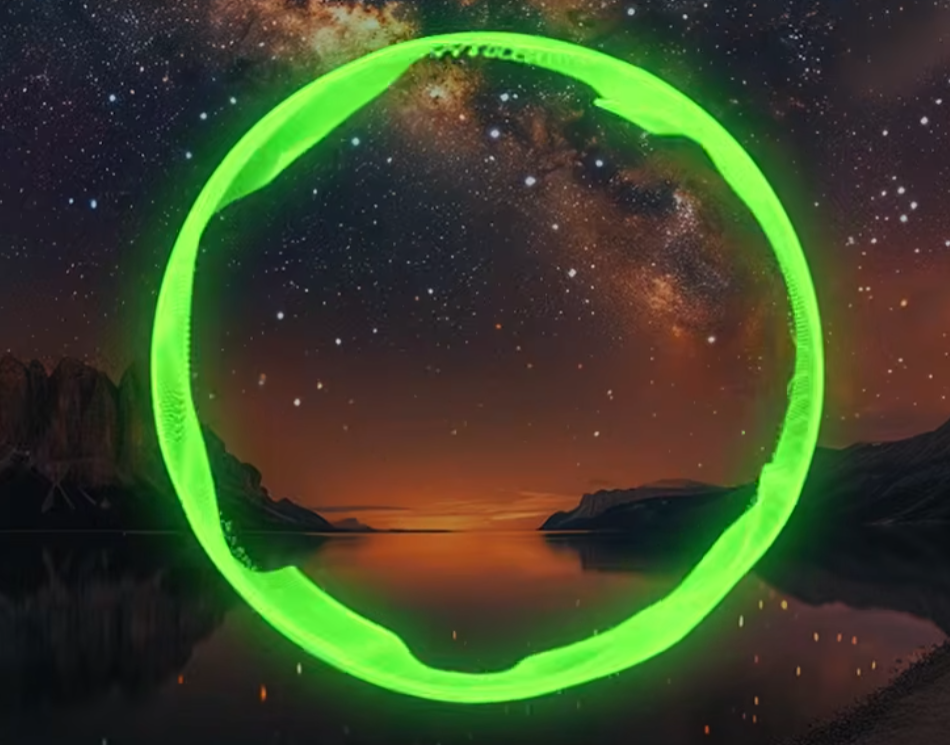
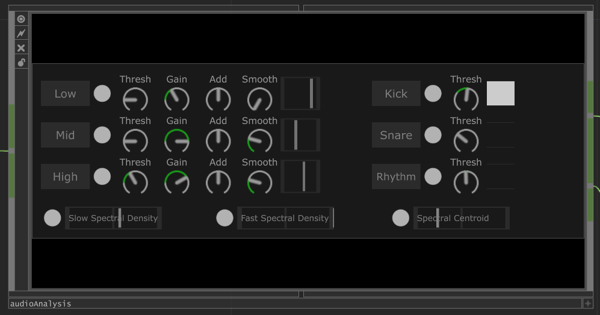
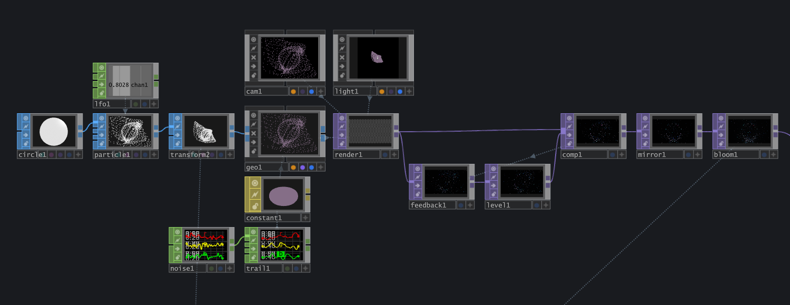
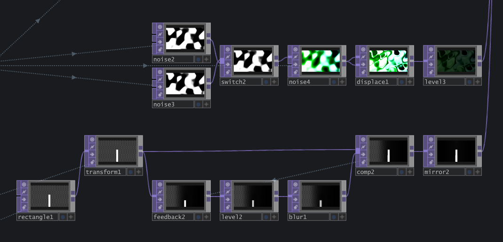
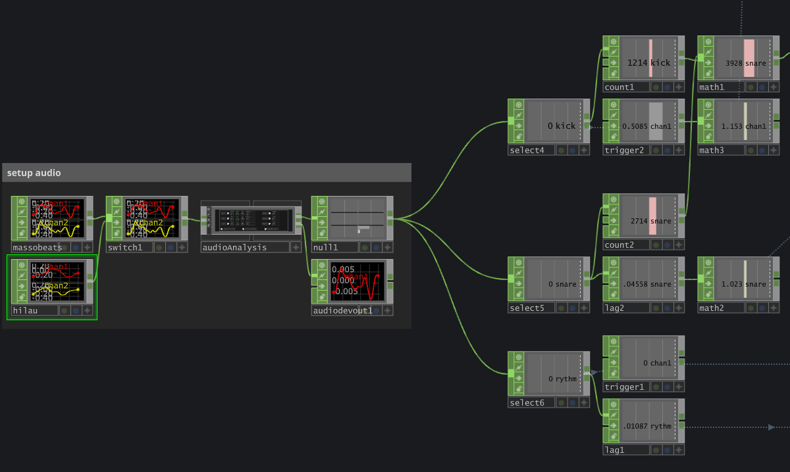

2026
Médias Interactifs
TouchDesigner
Audio-réactif
Personnel
Chromasonic est une expérimention sur l'audio-réactivité dans TouchDesigner. Je voulais découvrir cet aspect des médias interactifs tout en même temps que d'approfondir mes connaissances avec les particules dans TouchDesigner.
Visuels et interactions: Simon Savard-Blondel
Musique: freetouse.com
Aucune IA à été utilisée pendant la réalisation de ce projet.
01/05 -
Je voulais rester dans le multi-colore pour ce projet puisque mes projets précédents l'étaient aussi. J'ai décidé d'utiliser un cercle pour l'initiation des particules pour simuler les cercles de spectrum audio que l'on peut retrouver dans les vidéos de musique.

02/05 -
J'ai fait des recherches sur l'audio-réactivité pour savoir comment ça fonctionne. J'ai vu que l'on pouvait utiliser un spectre audio et un analyse que l'on peut ensuite normaliser pour obtenir le rythme. Cependant, je suis tombé sur la composante «audioAnalysis» qui fait la même chose et plus encore.

03/05 -
Comme j'ai mentionné précédemment, je suis allé avec un cercle pour l'initiation des particules. Je leur donne aussi une couleur aléatoire ainsi qu'un suivi et un flou lumineux pour rendre les particules plus intéressantes.

04/05 -
Pour l'arrière-plan, je suis aller avec un effet qui ressemble un peu à l'eau en utilisant des Noise TOP «fusionnés» ensemble. J'ai aussi rajouté un rectangle qui grandi et bouge vers l'extérieur dans le rythme de la musique.

05/05 -
J'ai décidé d'aller avec la composante «audioAnalysis», puisqu'elle me donne plus de données et j'ai plus de contrôle sur ce que j'ai besoin pour mon projet. Je suis resté simple en gardant le kick, le snare et le rythm pour débuter. J'ai créé quelques valeurs modifiées venant de la musique que j'utilise pour rendre le projet audio-réactif.

Un grand défi de ce projet était d'apprendre à utiliser la composante «audioAnalysis» correctement. Un autre défi était que ce projet était le premier projet audio-réactif que j'avais réalisé.
Après avoir fait quelques recherches et avoir regardé quelques vidéos, la composante «audioAnalysis» était plus facile à comprendre et à utiliser.
J’ai appris à utiliser les données que je peux ressortir d'une musique pour créer des visuels dynamiques. Je pourrais potentiellement faire en sorte que le projet réagit à la voix d'une personne pour combiner l'interactif avec l'audio-réactif.